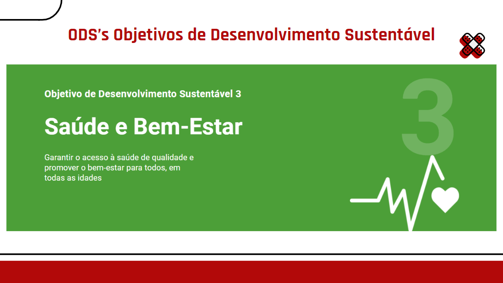
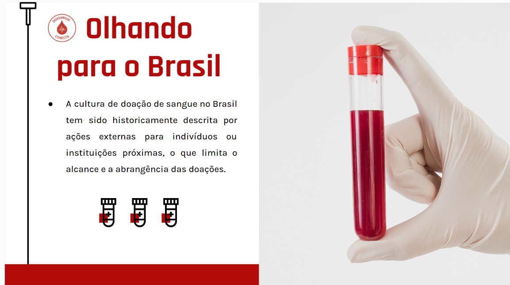
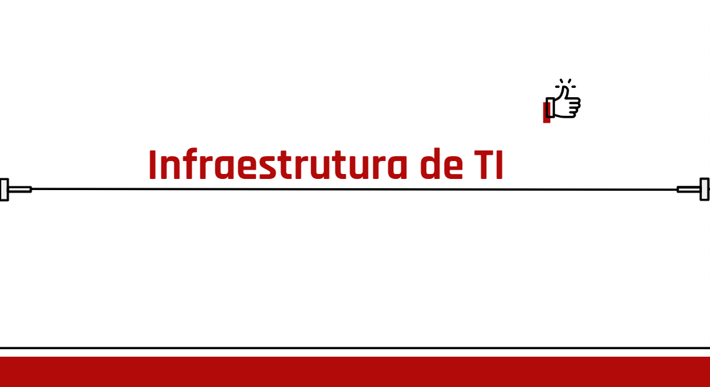
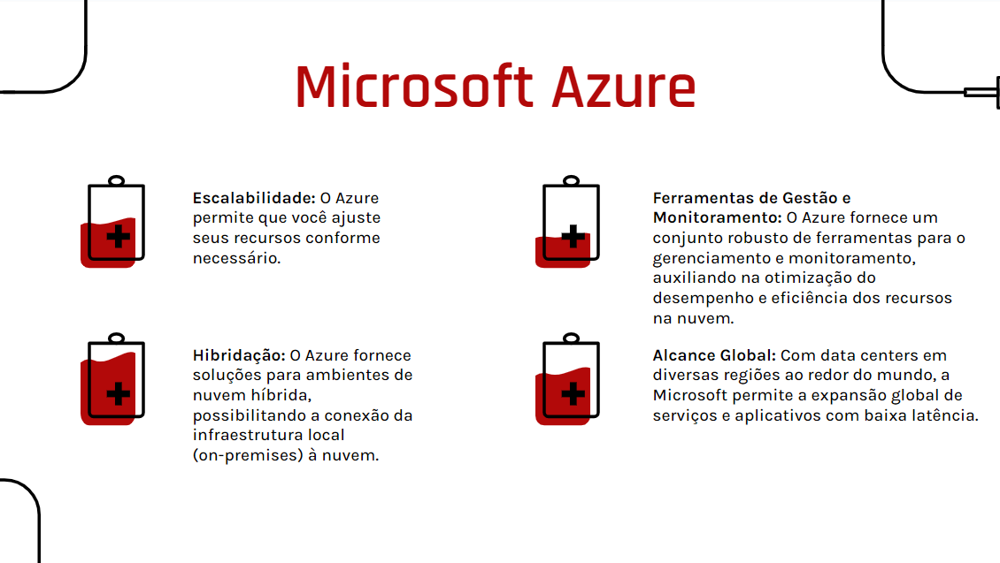
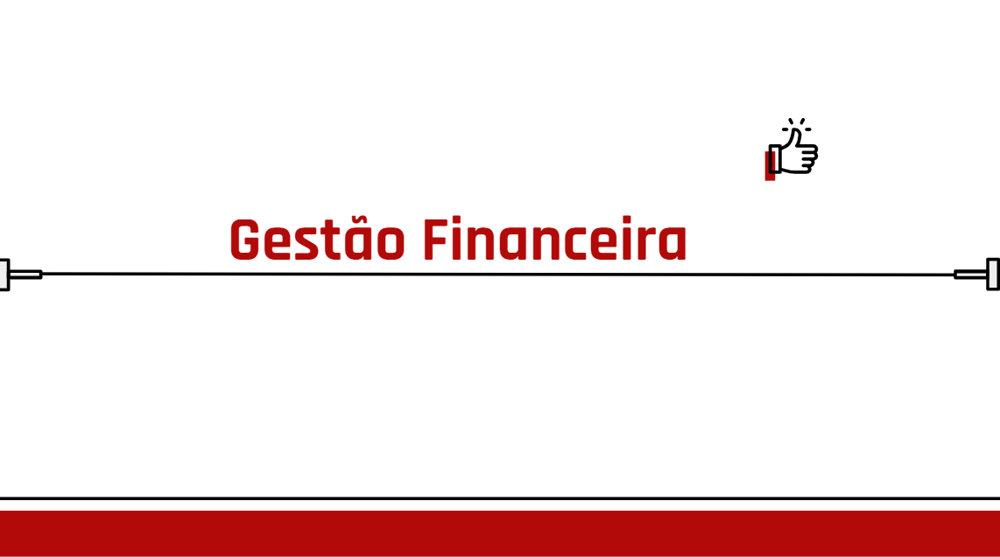
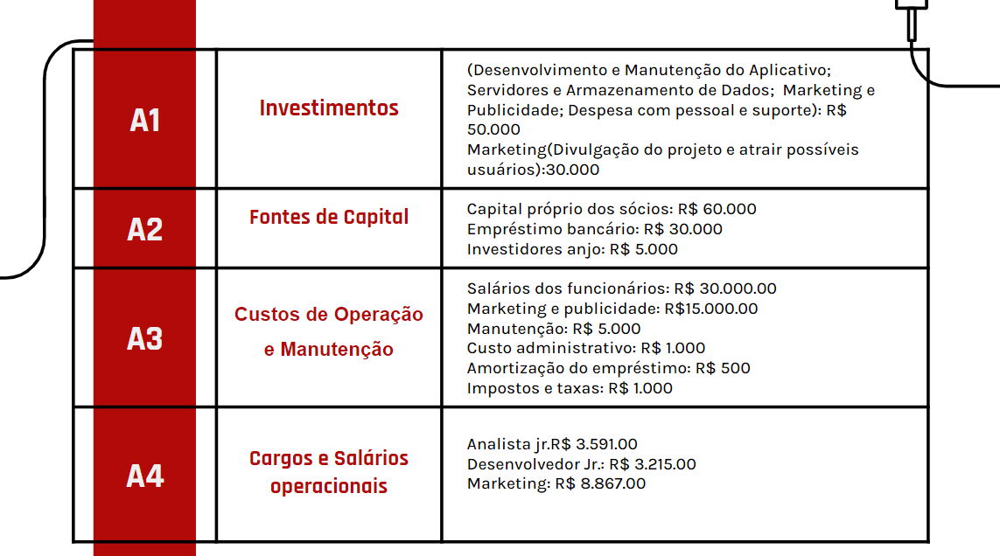

Quando olhamos para a sociedade brasileira e os desafios relacionados à disponibilidade de sangue. A conscientização sobre a importância da doação, a acessibilidade aos locais de coleta e o estabelecimento de um fornecimento regular de sangue são áreas de preocupação constante. Portanto, promover a doação de sangue e facilitar o acesso a informações sobre o processo de doação são elementos cruciais para a promoção de uma cultura de doação mais robusta e para atender às necessidades da população.
O aplicativo "DoaSangue Conecta" se alinha de maneira consistente com o Objetivo de Desenvolvimento Sustentável número 3 (ODS 3), previsto pelas Nações Unidas, que visa "Assegurar uma vida saudável e promover o bem-estar para todas as pessoas, em todas as idades." O ODS 3 coloca um foco significativo na promoção da saúde e bem-estar, bem como na redução das disparidades de saúde no âmbito global.

ODS 3: Saúde e Bem-Estar
Nesse contexto, o aplicativo “DoaSangue Conecta” desempenha um papel notável ao facilitar o acesso à doação de sangue, promovendo a saúde e o bem-estar da população. Sua contribuição para alcançar as metas do ODS 3 pode ser informada a partir de vários ângulos: Em primeiro lugar, o aplicativo contribui para a redução da mortalidade materna e infantil, pois um sangue seguro e acessível é fundamental em intervenções médicas críticas, como transfusões sanguíneas durante o parto. Ele atuará na prevenção e controle de doenças transmissíveis, pois a doação de sangue seguro é essencial para evitar a propagação de infecções transmitidas pelo sangue, como HIV, hepatite e malária.
"O brasileiro é um povo solidário", diz Flávia Tenembaum, diretora de captação de recursos do MSF Brasil. "Porém, a cultura de doação no Brasil é muito diferente da Europa e dos EUA. No Brasil, as pessoas preferem doar para pessoas ou instituições próximas. Isso lhes dá a sensação de que o dinheiro será usado da forma correta." Essa fala da Flávia mostra o desafio que estamos enfrentando em relação aos países mais desenvolvidos, culturalmente e socialmente, é preciso incentivar a doação no país e mostrar a população que pode ser tarde demais a doação tardia.

Ética, Cidadania e Sustentabilidade
Os aplicativos de banco de sangue representam um exemplo notável de como a ética, cidadania ativa e sustentabilidade se unem em prol de um objetivo comum: a salvação de vidas. Por meio da adoção desses princípios éticos, promoção da cidadania ativa e garantia da sustentabilidade no fornecimento de sangue, essas ferramentas desempenham um papel vital na saúde pública e na construção de uma sociedade mais solidária. É imperativo reconhecer o impacto positivo desses princípios na operação dos aplicativos de banco de sangue, que fortalecem os laços comunitários e garantem um suprimento constante de sangue seguro para aqueles que dependem da doação para sobreviver.

Infraestrutura de TI
Passando para o tópico de infraestrutura da tecnologia da informação, o provedor de computação em nuvem escolhido pelo grupo foi o Microsoft Azure: o Microsoft Azure representa a plataforma de computação em nuvem da Microsoft, oferecendo serviços semelhantes aos da AWS, abrangendo desde a hospedagem de aplicativos, armazenamento, gerenciamento de bancos de dados até recursos de aprendizado de máquina e a integração com produtos Microsoft, como o Windows Server e o SQL Server. É especialmente popular entre organizações que já incorporaram tecnologias da Microsoft em suas operações. Microsoft Azure figura como um dos principais provedores de computação em nuvem no mundo.

Infra TI Continuação
Variedade de Serviços: O Azure disponibiliza uma ampla gama de serviços de nuvem, que abrangem desde a hospedagem de aplicativos, armazenamento, bancos de dados, aprendizado de máquina, análise de dados até IoT (Internet das Coisas) e muito mais. Isso torna o Azure uma escolha versátil para diversas necessidades.
Escalabilidade: O Azure permite que você ajuste seus recursos conforme necessário. Inicialmente, você pode começar de forma modesta e, à medida que a demanda cresce, expandir seus recursos. Essa capacidade é particularmente benéfica para startups e empresas em fase de crescimento.
Desenvolvimento e DevOps: O Azure oferece um conjunto abrangente de ferramentas e serviços para desenvolvimento e DevOps, como o Azure DevOps, simplificando o processo de criação, implantação e gerenciamento de aplicativos na nuvem.

Gestão Financeira
A gestão financeira eficaz é essencial para garantir que o "DoaSangue Conecta" possa cumprir sua missão de incentivar a doação regular de sangue e, assim, contribuir para a melhoria da saúde pública. Para atingir esse objetivo, é necessário controlar as fontes de receita, como taxas de agendamento de doações, publicidade e parcerias, ao mesmo tempo em que se controlam os custos associados ao desenvolvimento, operação e marketing do aplicativo.

Gestão Financeira Continuação
Inclui também a elaboração de orçamentos, projeções financeiras, análise de previsões e a alocação de recursos para atividades-chave, como marketing, suporte ao cliente e desenvolvimento tecnológico. Manter um equilíbrio saudável entre receitas e despesas é fundamental para garantir a sustentabilidade no longo prazo do aplicativo.